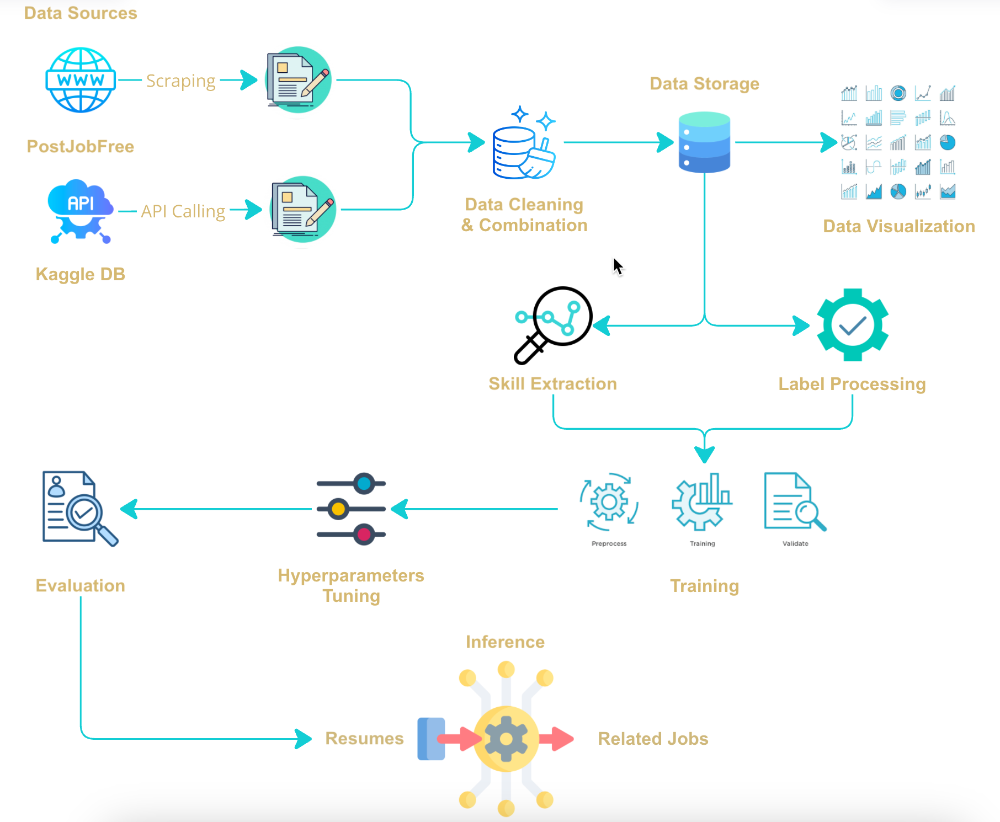
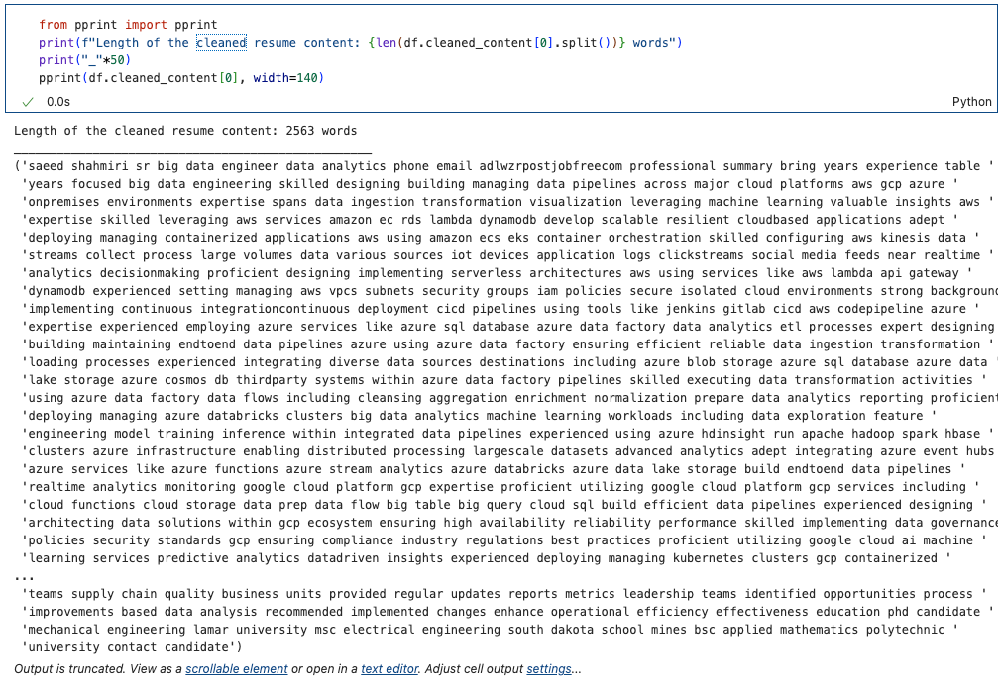
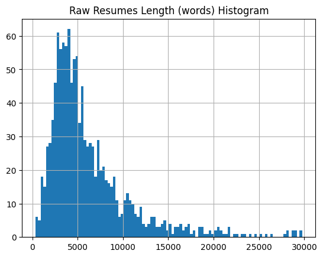
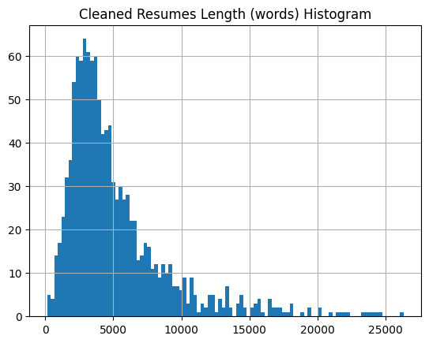
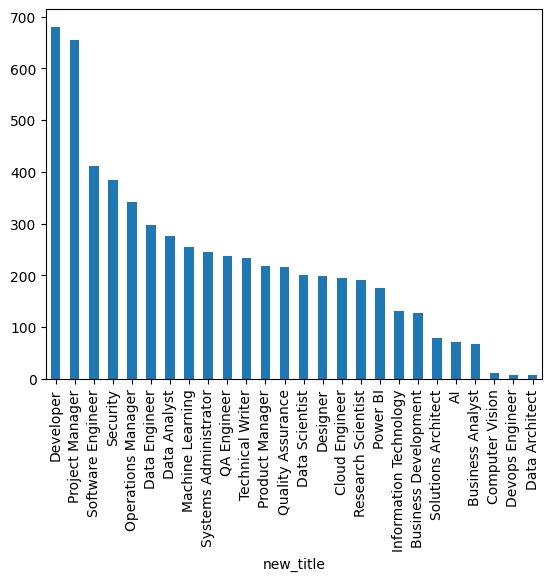
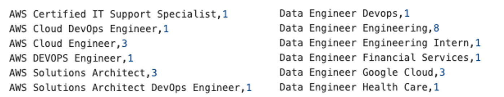
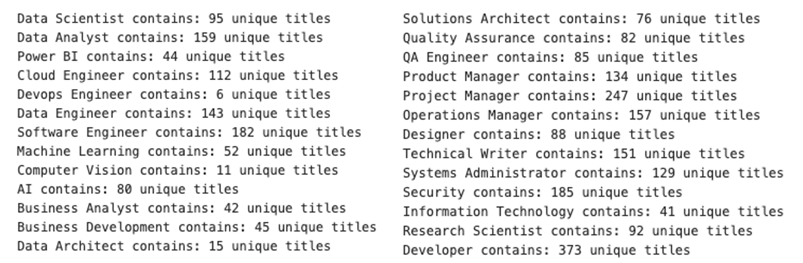
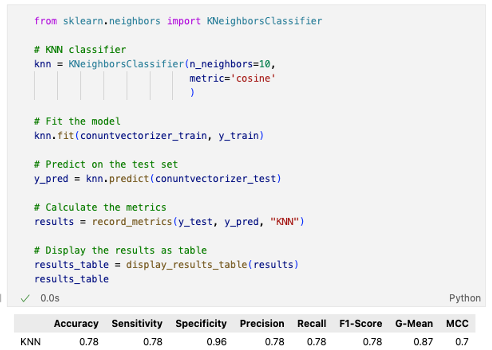

Models Implemented
This project aims to utilize data to build models for classification, focusing on predicting the resume category. By analyzing resume data, the goal is to create a solution that helps employers to more effectively classify candidates resumes.
Main steps in the modeling process
Click on each section below to view more information.
Initially, we standardized the text by converting all characters to lowercase to ensure uniformity.
Next, we removed unnecessary elements such as punctuation, special characters, URLs, and numerical values, depending on the task's requirements.
Tokenization was applied to split text into individual words or phrases, and stop words, which are common but non-informative terms, were filtered out
to enhance focus on meaningful content. Stemming or lemmatization was performed to reduce words to their root or base form, thereby normalizing
variations. We also eliminated duplicate text entries and handled missing or corrupted data to maintain dataset integrity.
Finally, we applied techniques like spell correction and text normalization to refine textual quality, ensuring it is well-suited for subsequent NLP modeling.
Raw Text Before cleaning

Resume content after cleaning process
Histogram of resume length by words before and after cleaning process
 
Resume dataset can be found here:
Resume Data
Label distribution Visualization
After scraping data using specific keywords, we collected over 12,000 resumes. Each resume includes a title, which is set by the candidates based on their experience and desired job roles. While these titles are not strictly uniform or standardized labels, they do partially reflect the nature and focus of the resumes. Therefore, we utilized this column as the label for the resume classification task.
However, these titles contain typos, misspellings, and duplicate entries. Additionally, some titles refer to the same job but are expressed differently. Examples of these variations are illustrated in the figure below.
Labels Processing
To address this issue, we developed a code to scan and identify all possible relevant titles, grouping them together and standardizing them into final, uniform titles. This method worked effectively for the majority of the data. However, some titles could not be categorized due to their ambiguity or lack of relevance. As a result, we decided to exclude these titles from the dataset.
Finally, we selected 6 main categories based on the grouped titles, which are used as labels for the classification task. And to summary the before and after processing of the labels, we visualized the label processing steps in the below figure.

All label processing code can be found here:
Label Processing Code
More details in labeling process can be found in the final report:
Milestone 3 Report
Hyperparameter tuning is the process of finding the best settings (hyperparameters) for a model to improve its performance.
These settings, such as the learning rate or maximum depth, are predefined and cannot be learned directly from the data, but they have a big impact on how well the model works.
In our solution, we used
RandomizedSearchCV
and
GridSearchCV
methods from the sklearn library. Both methods allow us to test different combinations of hyperparameters for the model.
Based on a specific performance metric (like
accuracy
or
F1-score
), it identifies the best combination of settings.
Once we find the best parameters, we use them to finalize the model, ensuring it achieves the highest possible performance.
GridSearchCV and RandomizedSearchCV also include techniques to reduce overfitting, such as cross-validation. By setting the `cv` parameter, the model is trained and validated on multiple random data splits (folds).
This ensures the model learns from all the data while avoiding overfitting or focusing too much on any single subset.
Example of tuining process for KNN model is shown below:

After tuning the hyperparameters, the model is retrained on the entire dataset using the best settings.

With the example of KNN hypertuning, the model's performance improved significantly after tuning, with an increase in accuracy from 0.74 to 0.78.
Details of Fituning progress and the improvement for each model can be seen in the final report:
Milestone 3 Report